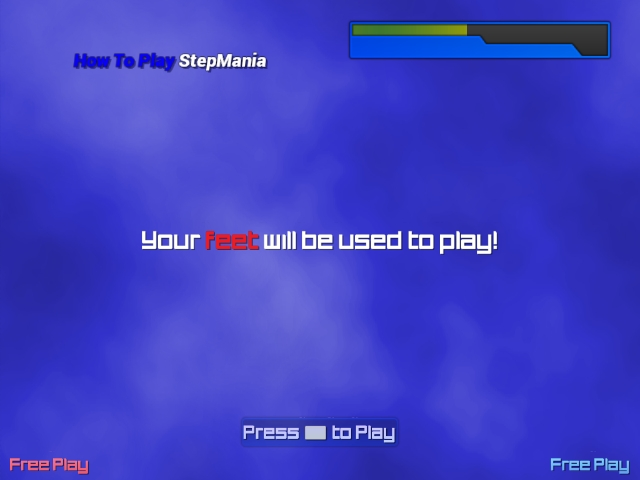

Introduction
StepMania: On The Chill is a theme for StepMania 5. It is based on the default theme by Midiman (of SSC), and is actually intended to remain close enough to track most fixes/updates that apply to the original.
The original theme
This is a fork of a repo I started to track only the Themes/default directory within the main StepMania project.
Changes
The notable changes include these:
- Palette of cooler and colder blues in place of the sunny yellows and oranges.
- New logotype and artwork for title and menu screens.
- Original typeface (same as new logotype)
- Parallax cloud effects for some backgrounds.
- Vector-based re-renders (and, in places, reinterpretations) of some images.
More details
See the GitHub repo for more specific information.